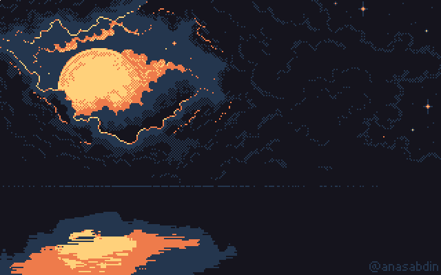

.jpg)

Bisteca modelo
Bem-vindo a ilha de Tipora!:3
Um lugar calmo, e definitivamente natural!
Pode não ser uma ilha paradisíaca, mas defintivamente tem conforto
Tipora é uma pequena ilha localizada no Espírito Santo a 250 quilômetros de distância da costa. O vilarejo de Tipora surgiu devido à construção de uma mansão de um famoso pintor, o que atraiu trabalhadores para a região e que, posteriormente, assentaram-se na ilha. Tipora possui cerca de 20 a 30 habitantes apenas.
Hoje tentarei explicar e ajudar o compreendimento de alguns acontecimentos, pode-se esperar:
.gif)
Milo Castello, ele é um residente da Ilha de Tipora,
mora em uma casa próxima à praia e é um dos pescadores da ilha,
seguindo os passos de seu pai, Bartô Castello. Milo foi um nome que ele
aderiu depois que seu "irmão" desapareceu, inicialmente ele se chamava
Miguel, e Milo era o nome de seu irmão gemeo, que depois de anos ele
descobriu
que tudo não passava de fruto da sua imaginação,
e Milo Castello era apenas seu irmão imaginario,
que de vez enquando Miguel gostava de atuar como o mesmo,
um dia Miguel atuou como Milo, e ele nunca mais voltou.
Querendo proteger a imagem que ele tinha de seu irmão, os habitantes da
ilha esconderam o fato de que na verdade seu irmão, nunca existiu
"Miguel [...] eu vou tentar ao máximo trazer você de volta, custe o que custar."
Barbára Lima assim como Milo é uma das poucas pessoas que residem na
Ilha de Tipora,nasceu em 10 de Outubro de 2000, ela é uma jardineira,
que, trabalha e mora juntamente de sua mãe ao lado da antiga mansão dos
Moretti, Lívia Lima, seu pai é desconhecido, sua familia consiste em
apenas ela e sua mãe, quando era criança Miguel era seu melhor amigo, e
ela costumava ter uma paixão de criança por ele, eles sempre brincavam
juntos, e com o Milo, quando Miguel desapareceu e Milo tomou "posse" de
seu corpo isso abalou muito a Bárbara, que acabou se afastando do
mesmo. Quando os irmãos Florence chegaram a ilha de Tipora, Barbára
pode reacender sua antiga amizade com o seu amigo de infância.
"Eu não protegi a única pessoa que precisava de mim"
Olivier Florence é uma das poucas pessoas que visitaram a ilha e por
um periodo de tempo, morou nela, ele é um universitario, filho de
Angelina e Montel Florence e irmão mais novo de Amelie Florence.
Olivier, e a sua familia vieram a ilha por conta de seu pai, um
Avaliador de artes, que foi contratado para examinar as obras de artes
do antigo pintor Constantino Moretti, o dono da mansao Moretti, ele
acabou por morar nessa mesma mansão enquanto estavam na ilha. Olivier
Florence tem 20 anos nasceu em 21 de Agosto de 2001.
"Meu coração tá dividido entre você e minha irmã"
Amelie Florence, irmã mais velha de Olivier, também veio á morar em Tipora. Ela tambem é uma universitária. Amelie, junto de sua família, viajou para a Ilha, por causa de seu pai que foi até lá para examinar as obras, ela diz que veio apenas por causa de seu pai, que diz que, "seria uma otima viajem em familia" Ela tem 23 anos, nasceu em um dia desconhecido no ano de 1999
"Eu cansei de fazer sotaque, eu cansei de fingir ser quem eu não sou, eu não sou essa Amelie, eu nunca fui."
Bisteca é o gato da Ilha de Tipora, ele nao possui nenhum dono todas as pessoas da Ilha cuidam e alimentam ele, ele constantemente é visto brincando com as crianças. Ele chegou aproximadamente há 7 anos, quando Adrian o barqueiro voltou de uma de suas navegações e trazendo Bisteca junto com ele a pedido de uma das crianças da Ilha que havia pedido por um gato.
